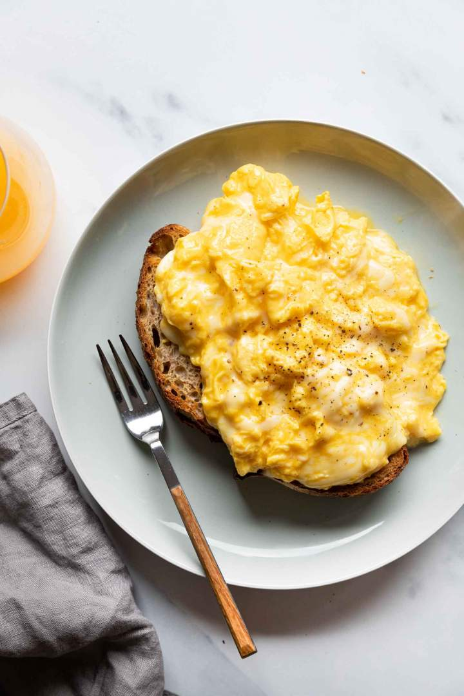

Cheesy Eggs

Description
Soft scrambled eggs on toast.
Ingredients
- 1 teaspoon butter
- 2 whole eggs
- 1 piece toast of your choice
- 1 slice American cheese
Steps
- Put butter in cold pan, heat to medium.
- Crack eggs into pan.
- When the egg white starts to cook, add cheese to pan.
- Scramble throughly.
- Toast bread, put on plate and gently place egg mixture on top.
- Serve, salt should not be necessary!